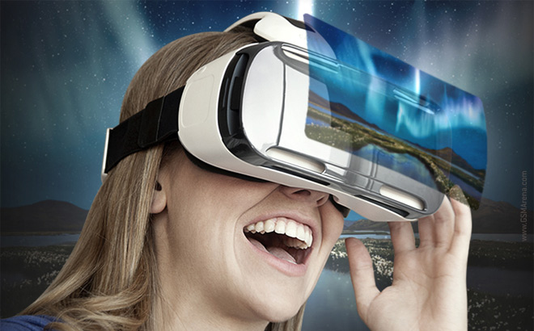
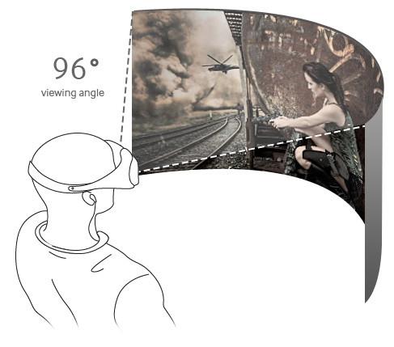

واقعیت مجازی چیست؟

واقعیت مجازی فناوریی است که در آن محیطی مجازی در جلوی چشمان کاربر قرار میگیرد و براساس حرکت سر و بدن آن محیط مجازی تعامل برقرار می کند. به عبارت دیگر هنگامی که یک فرد هدست واقعیت مجازی را بر روی سر خود نصب می کند، در جلوی چشمان خود محیطی را مشاهده می کند که براساس تغییر موقعیت بدنش تغییر می کند و ذهن انسان پس از مدتی می پذیرد که در یک محیط واقعی قرار گرفته است.
یک محیط واقعیت مجازی در هدست واقعیت مجازی توسط اپلیکیشن های اختصاصی آن به وجود می آید. برخی از این محیط ها بصورت گرافیک رایانه ای و سه بعدی هستند و برخی دیگر نیز ویدئوها یا تصاویری 360 درجه از محیط های واقعی هستند که از قبل فیلمبرداری شده اند. با این قابلیت فناوری واقعیت مجازی میتوان این امکان را فراهم کرد تا افراد بتوانند از امکانات و مکان شما به خوبی دیدن کنند.

اغلب محیطهای واقعیت مجازی در درجه اول، تجربههای دیداری میباشند که از طریق یک هدست واقعیت مجازی قابل مشاهده و تجربه میباشند. برخی از اپلیکیشن ها دارای اطلاعات حسی دیگری مانند تولید صدا هم میباشند. محیطهای شبیهسازی شده میتوانند مانند محیطهای زندگی واقعی و یا به صورت کاملا متفاوت باشند نظیر آنچه در محیطهای بازی دیده میشود.

انواع هدست ها:
براساس نوع کارکرد هدست های واقعیت مجازی می توان آنها را به دو بخش تقسیم نمود. اول هدست هایی که برای نمایش تصویر از نمایشگرهای اختصاصی درون خود استفاده می کنند و دوم هدست هایی که برای نمایش تصویر از نمایشگر تلفن همراه استفاده می کنند.
با توجه به اینکه تلفن های همراه پرقدرت که قابلیت پردازش و نمایش اپلیکیشن های واقعیت افزوده را داشته باشند در حال حاضر زیاد شده اند لذا هدست هایی که بر این اساس کار می کنند نیز بسیار بیشتر مورد استقبال قرار گرفته اند. در حال حاضر اکثر هدست های واقعیت مجازی در بازارهای جهانی مبتنی بر تلفن های هوشمند هستند و به همین خاطر هم قیمت بسیار پایینتری نسبت به نوع اول هدست ها دارند.
چه چیز واقعیت مجازی برای ما جذاب و هیجان انگیز است؟
در پاسخ به این سؤال می توان گفت که واقعیت مجازی یکی از قدیمی ترین و مهمترین پارادایم های حک شده در ذهن ما را می شکند. و آن پارادایم تماشای تصویر متحرک از دریچه ی یک پنجره است. از زمانی که تلویزیون و سینما اختراع شدند و به دسترس مردم رسیدند، همیشه ما فقط می توانستیم به یک صفحه نگاه کنیم و اگر صورتمان را از روبروی آن صفحه برمی گرداندیم اشیا و محیط اطرافمان را مشاهده میکردیم. ولی در فناوری واقعیت مجازی، زمانی که هدست واقعیت مجازی را بر روی سرمان قرار داده ایم، هنگامی که سر خود را حرکت دهیم براساس آن حرکت، تصویر نمایش داده شده نیز تغییر می کند گویی که دقیقاً در آن محیط قرار داریم.
عمده ترین کاربردهای فناوری واقعیت مجازی:
استفاده در صنعت توریسم
یکی از کاربردهای مهم فناوری واقعیت مجازی در گردشگری است. به این صورت که ویدئوها و یا تصاویری 360 درجه و با کیفیت بالا از مکان های توریستی و مهم تهیه می شود و افراد هزاران کیلومتر آنطرف تر می توانند با استفاده از هدست های واقعیت مجازی آن ویدئوها را آنگونه ببینند که گویی در همان جا قرار دارند و به هر طرف که بخواهند می توانند حرکت کنند.
استفاده در نمایش مکان های اجاره ای و فروشی
یکی دیگر از کاربردهای این فناوری نمایش همه جهته و کامل فضای داخلی و بیرونی مکان هایی است که برای فروش یا اجاره قرار گرفته اند. بطوری که فرد بیننده به راحتی می تواند بدون حضور در آن مکان، همه جنبه های آن را از طریق هدست واقعیت مجازی بررسی کرده و انتخاب کند. همچنین از این فناوری می توان برای پیش نمایش طرح های نمای داخلی آپارتمان ها استفاده نمود
سرگرمی
اگر صنعت گیمینگ در حال حاضر یکی از کاربردهای اولیه و اصلی تکنولوژی واقعیت مجازی نباشد، پس دیگر شکلهای سرگرمی قطعا خواهند بود. در حال حاضر تماشاگران سینما میتوانند از فیلمهای سهبعدی لذت ببرند؛ اما با اپلیکیشنهایی مانند Oculus Cinema، کاربران میتوانند به شکلی عمیقتر و موثرتر از دیدن این فیلمها لذت ببرند. آنها میتوانند فیلمها را روی یک پرده بسیار بزرگ مجازی تماشا کنند – چیزی شبیه به یک تجربه شخصی دیدن فیلم- و خودشان را درون آن فیلم تصور کنند؛ محاصره شده در میان افکتهای تصویری و صوتی. اگر شما جزو علاقهمندان و طرفداران ورزش هستید، بد نیست بدانید که شرکتهای ارائهدهنده پلتفرم واقعیت مجازی مانندLiveLike VR یک استادیوم مجازی ساختهاند که میتوانید هیجان و تجربه حضور در روز مسابقه و بازی را با دوستانتان در آن شریک شوید، آن هم در راحتی کامل و از روی کاناپه اتاقتان. تکنولوژی واقعیت مجازی با ساختاری مشابه همچنین میتواند تجربه متفاوتی از حضور در یک کنسرت موسیقی را با پلتفرمهایی مانند آنچه شرکت Next VR ارائه کرده است، برای کاربران ایجاد کند آن هم بدون حضور طرفداران پر سر و صدا و شلوغ. حتی در صنعت توریسم و جهانگردی هم این تکنولوژی نفوذ کرده است. شرکت جهانگردی Marriott’s Travel Brilliantly در همکاری با شرکت Oculus قرار است علاقهمندان سفر و مسافرت را غافلگیر کند. به این ترتیب و با استفاده از یک اپلیکیشن شما میتوانید به صورت مجازی و تنها در 90 ثانیه به هاوایی بروید و با سرمای این روزهای زمستان برای چند لحظه خداحافظی کنید.
بهداشت و درمان
صنعت بهداشت و درمان با وجود موسساتی که از تصاویر کامپیوتری برای تشخیص و درمان بیماریها استفاده میکنند، یکی از بزرگترین استقبالکنندگان از تکنولوژی واقعیت مجازی است. شبیهسازیهای واقعیت مجازی از قبیل آنچه شرکتهای نرمافزاری Surgical Theater و Conquer Mobile تولید میکنند، میتوانند تصاویر تشخیصی درست و دقیقی را از اسکنها و مدلهای سهبعدی تهیه شده از آناتومی بیماران را ایجاد کنند. مدلهای مجازی به پزشکان و جراحان تازهکار و باتجربه کمک میکنند تا بتوانند امنترین و موثرترین راه برای پیدا کردن محل تومورها را ارائه دهند، ابزارهای جراحی را در جای درست قرار دهند یا امکان تمرین و تست درمانها و عملهای جراحی پیچیده را فراهم بیاورند. صرفنظر از جراحی، واقعیت مجازی همچنین میتواند به عنوان یک ابزار موثر و مقرون به صرفه برای توانبخشی بهکار برده شود. بیماران ضایعات مغزی و نخاعی در سراسر اروپا حالا میتوانند از یک درمان موثر مبتنی بر واقعیت مجازی که از سوی شرکت MindMazeto ارائه شده است، بهره ببرند. این درمان امکان بازیابی عملکرد فیزیکی و شناختی را با روند درمانی سریعتر از روشهای معمول برای بیماران فراهم میآورد. تمرینات مجازی و بازخوردهای در لحظه در درمان MindMazeto احساس انجام یک بازی را در بیمار ایجاد کرده و با ایجاد انگیزه در بیماران، آنها را به تمرین هر روزه ترغیب میکند.
فضانوردی
این روزها دانشمندان ناسا یک ماموریت سخت در پیش دارند؛ جستوجوی زندگی در سیارههای دیگر. به همین دلیل هم هست که آنها به دنبال تکنولوژی واقعیت مجازی هستند تا بتوانند از طریق آن روباتها را روی مریخ کنترل کرده و راههای دقیق و کم خطر را برای فضانوردان پیدا کنند. در لابراتوار Jet Propulsion ناسا محققان هدست Oculus Rift را با تجهیزات سنجش حرکت مربوط به Kinect 2 و Xbox One مرتبط کردهاند تا از این طریق بتوانند یک بازوی رباتیک را با حرکات دست اپراتور کنترل کنند. این تکنولوژی در آیندهای نه چندان دور میتواند برای کنترل مریخ نوردها یا دیگر ابزارها از میلیونها مایل دورتر بهکار برده شود. با اضافه کردن تردمیل Virtuix Omni هم محققان میتوانند پیادهروی روی سطح مریخ را شبیهسازی کنند تا فضانوردان را برای یک فرود موفقیتآمیز تقویت کنند. در نمایشگاه CES امسال هم ناسا این شانس را به بازدیدکنندگان داد تا از طریق تکنولوژی واقعیت مجازی بتوانند آنچه را که فضانوردان هنگام صعود به فضا میبینند، ببینند و تجربه کنند.
موزهها
واقعیت مجازی میتواند علایق فرهنگی ما را پررنگتر کند. این تکنولوژی میتواند بلافاصله و در لحظه کاربران را به موزه لور پاریس، آکروپولیس در آتن و موزه گوگنهایم در نیویورک ببرد. در واقع تعدادی از موزهها در حال حاضر با همکاری توسعهدهندگان توانستهاند فضاهای مجازی را ایجاد کنند که مردم بتوانند تجربه حضور فیزیکی در موزه را در آنها داشته باشند. سال گذشته موزه بریتیش در لندن اولین آخر هفته واقعیت مجازی خودش را برگزار کرد و موزه تاریخ طبیعی آمریکا در شهر نیویورک هم امکان تماشای بعضی از مجموعههای خودش را به صورت مجازی و از طریق عینک واقعیت مجازی Cardboard گوگل برای علاقهمندان فراهم آورد. به این ترتیب حالا هر کاربر موبایل هوشمند میتواند با استفاده از عینک واقعیت مجازی گوگل به تماشای این موزه برود.
خودروسازی
از فرآیند طراحی تا نمونههای اولیه مجازی، خودروسازان هم دههها است که از شبیهسازیهای تکنولوژیک بهره میبرند. شرکت فورد با استفاده از هدست واقعیت مجازی Oculus Rift یک مرکز واقعیت مجازی برای توسعه خودروهای بدون راننده خود ساخته است. در آزمایشگاه این شرکت در در بورن میشیگان کارمندان میتوانند یک هدست واقعیت مجازی را پوشیده، یک صندلی در خودرویی که هنوز تولید نشده داشته باشند و از این طریق داخل و خارج یک خودرو را بازرسی کنند. نمونههای اولیه مجازی به طراحان و مهندسان بخشهای مختلف امکان بازرسی عناصر مختلف مانند موتور از نزدیک را داده تا بتوانند قبل از ورود خودرو به بازار مشکلات احتمالی آن را پیدا و رفع کنند.
آموزش
صنعت خودرو تنها کاربرد واقعیت مجازی برای اهداف طراحی نیست؛ شرکت تویوتا همچنین از هدستهای واقعیت مجازی Oculus به عنوان بخشی از کمپین TeenDrive365 خودش استفاده میکند تا از این طریق به نوجوانان و والدینشان درباره رانندگی پرخطر آموزش دهد. این تجربههای تاثیرگذار که با هدستهای واقعیت مجازی ایجاد میشوند، میتوانند آموزش در حوزههای مختلف را متحول کنند. مقامات شرکت تویوتا میگویند واقعیت مجازی میتواند با ساده کردن و شبیهسازی موقعیتهای پیچیده برای افراد در سنین مختلف، آموزش شناختی سریعتر، موثرتر و کاربردیتری را ایجاد کند. اپلیکیشنهایی مانند Unimersiv وCerevrum نمونههایی از ابزارهای آموزشی آنلاین مبتنی بر واقعیت مجازی هستند.
دادگاهها
عکسهای ثابت و دوبعدی ممکن است ابزار کافی جهت ارزیابی صحنههای جرم برای اعضای هیات منصفه نباشند. دیدن یک صحنه جرم به صورت سهبعدی میتواند به قضات برای تجسم اینکه افراد و اشیا به چه صورت بودهاند، کمک زیادی کند. محققان دانشگاه زوریخ گزارشی را منتشر کردهاند که نشان میدهد استفاده از هدست واقعیت مجازی Oculus Rift برای بازسازی اتفاقات و صحنههای جرم در دادگاهها را بررسی کرده است. این محققان متوجه شدهاند استفاده از تکنولوژی تعاملی، تجسم و فهم بهتر و دقیقتر جزئیات یک مورد را راحتتر کرده و تصمیمگیری درباره مجرم بودن یا نبودن افراد را منصفانهتر میکند.
خرید
بسیاری از افراد در حال حاضر با خرید آنلاین از وبسایتها آشنا هستند، اما اپلیکیشنهای واقعیت مجازی مانند Trillenium میتوانند قدم بعدی در شیوه خرید محصولات روی وبسایتها باشند. این اپلیکیشنها میتوانند یک بازدید مجازی از تمام فروشگاه را ایجاد کرده و تجربه خریدهای آنلاین را بهبود بدهند. خریداران میتوانند به جای نگاه کردن به کاتالوگهای موجود روی یک وبسایت، یک تجربه خرید در لحظه و حتی با همراهی دوستانشان را داشته باشند. این اپلیکیشن توانسته توجه یکی از بزرگترین خردهفروشیهای آنلاین اروپا یعنی ASOS را به خود جلب کند. خریداران میتوانند بهزودی با استفاده از اپلیکیشن Trillenium و هدستهای واقعیت مجازی، اجناس مختلف را از ASOS به راحتی با دقت خرید حقیقی و حضوری، بخرند.
صنایع نظامی
ارتش ایالات متحده آمریکا از شبیهسازهای واقعیت مجازی برای آموزش و تمرین سربازان قبل از بهکار گرفتن آنها، استفاده میکند. نسخههای غیرتجاری بازیهایی مانندVirtual Battlespace 2 و Unity 3D برای آمادگی و تمرین بیشتر نیروهای نظامی پیش از نبرد بهکار برده میشوند. شبیهسازیهای بازیگونه به گروهها این امکان را میدهد تا بتوانند با یکدیگر در فضای شبیهسازی شده و نزدیک به واقعیت همکاری کنند، پیش از آنکه بخواهند با تجهیزات واقعی در دنیای حقیقی به نبرد بروند. این محیط شبیهسازی شده بسیار مهم و تاثیرگذار است چون تمرین و آموزش از این طریق تمرکز و قدرت تصمیمگیری سربازان و نیروهای نظامی را تقویت میکند.
مدیتیشن و سلامت روانی
با استفاده از هدست واقعیت مجازی Oculus و برنامه Guided Meditation VR کاربران میتوانند مکان شادی مخصوص خودشان را پیدا کنند و به خوبی در یکی از محیطهای قابل انتخاب از این طریق به مدیتیشن بپردازند. کارشناسان معتقدند که این تجربه میتواند به کاهش استرس و اضطراب ناشی از زندگی پرمشغله روزانه کمک کند. واقعیت مجازی همچنین میتواند برای آنهایی که از مشکلات روانی جدی و نیازمند مراقبت بیشتر رنج میبرند، به عنوان یک ابزار درمانگر مورد استفاده قرار بگیرد. تکنولوژی واقعیت مجازی میتواند محیطی امن و کنترل شده را برای بیماران ایجاد کند تا بتوانند در آن با آنچه آنها را میترساند، مواجه شوند. بر اساس مطالعهای که در یک نشریه روانشناسی آمریکایی منتشر شده، این نوع از درمان به وسیله واقعیت مجازی به خوبی درمان با داروها موثر و مفید است.